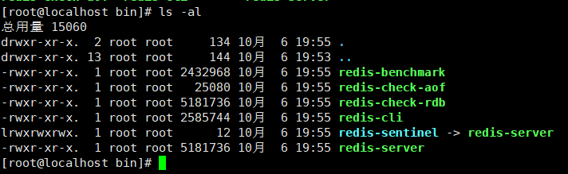
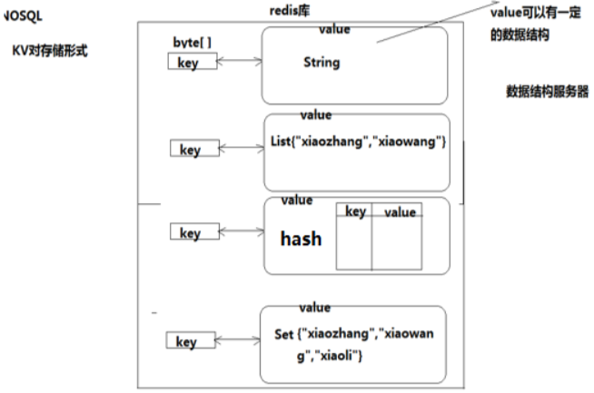

Redis 是一个高性能的key-value数据库。
Nosql数据库
Nosql介绍
NoSQL：一类新出现的数据库(not only sql)，它的特点：
- 不支持SQL语法
- 存储结构跟传统关系型数据库中的那种关系表完全不同，nosql中存储的数据都是K-V形式
- NoSQL全世界中没有一种通用的语言，每种nosql数据库都有自己的api和语法，以及擅长的业务场景
NoSQL中的产品种类相当多：
- Mongodb
- Redis
- Hbase hadoop
- Cassandra hadoop
NoSQL和SQL数据库的比较：
适用场景不同：sql数据库适合用于关系特别复杂的数据查询场景，nosql反之
“事务”特性的支持：sql对事务的支持非常完善，而nosql基本不支持事务
- 事务：一组sql操作，要么都成功，要么都失败
两者在不断地取长补短，呈现融合趋势
Redis简介
- Redis是一个开源的使用ANSI C语言编写、支持网络、可基于内存亦可持久化的日志型、Key-Value数据库，并提供多种语言的API。从2010年3月15日起，Redis的开发工作由VMware主持。从2013年5月开始，Redis的开发由Pivotal赞助。
- Redis是 NoSQL技术阵营中的一员，它通过多种键值数据类型来适应不同场景下的存储需求，借助一些高层级的接口使用其可以胜任，如缓存、队列系统的不同角色
Redis特性
Redis 与其他 key - value 缓存产品有以下三个特点：
- Redis支持数据的持久化，可以将内存中的数据保存在磁盘中，重启的时候可以再次加载进行使用。
- Redis不仅仅支持简单的key-value类型的数据，同时还提供list，se，zset，hash等数据结构的存储。
- Redis支持数据的备份，即master-slave模式的数据备份。
Redis 优势
- 性能极高 – Redis能读的速度是110000次/s,写的速度是81000次/s 。
- 丰富的数据类型 – Redis支持二进制案例的 Strings, Lists, Hashes, Sets 及 Ordered Sets 数据类型操作。
- 原子 – Redis的所有操作都是原子性的，同时Redis还支持对几个操作全并后的原子性执行。
- 丰富的特性 – Redis还支持 publish/subscribe, 通知, key 过期等等特性。
redis应用场景
- 用来做缓存(ehcache/memcached)——redis的所有数据是放在内存中的（内存数据库）
- 可以在某些特定应用场景下替代传统数据库——比如社交类的应用
- 在一些大型系统中，巧妙地实现一些特定的功能：session共享、购物车
- 只要你有丰富的想象力，redis可以用在可以给你无限的惊喜…….
Redis数据库
Redis环境搭建
下载
- 当前redis最新版本是4.0，它是一个测试版本，稳定版本是3.2版本。
- 当前ubuntu虚拟机中已经安装好了redis，以下步骤可以跳过 最新稳定版本下载链接： http://download.redis.io/releases/redis-3.2.8.tar.gz
- step1:下载
wget http://download.redis.io/releases/redis-3.2.8.tar.gz
step2:解压
tar -zxvf redis-3.2.8.tar.gz
step3:复制，放到usr/local⽬录下
sudo mv ./redis-3.2.8 /usr/local/redis/
step4:进⼊redis⽬录
cd /usr/local/redis/
step5:生成
sudo make
step6:测试,这段运⾏时间会较⻓
sudo make test
step7:安装,将redis的命令安装到/usr/local/bin/⽬录
sudo make install
step8:安装完成后，我们进入目录/usr/local/bin中查看
cd /usr/local/bin
ls -all

erver redis服务器 —-启动redis服务器
redis-cli redis命令行客户端
redis-benchmark redis性能测试工具
redis-check-aof AOF文件修复工具
redis-check-rdb RDB文件检索工具
step9:配置⽂件，移动到/etc/⽬录下
配置⽂件⽬录为/usr/local/redis/redis.conf
- sudo cp /usr/local/redis/redis.conf /etc/redis/
了解Redis的配置
配置
- Redis的配置信息在/etc/redis/redis.conf下。
查看
- sudo vi /etc/redis/redis.conf
核心配置选项
绑定ip：如果需要远程访问，可将此⾏注释，或绑定⼀个真实ip
- bind 127.0.0.1
端⼝，默认为6379
- port 6379
是否以守护进程运⾏
- 如果以守护进程运⾏，则不会在命令⾏阻塞，类似于服务
- 如果以⾮守护进程运⾏，则当前终端被阻塞
- 设置为yes表示守护进程，设置为no表示⾮守护进程
- 推荐设置为yes
- daemonize yes
数据⽂件（数据写到哪一个文件里面）
- dbfilename dump.rdb
数据⽂件存储路径（如果redis目录没有，要自己新建，直接启动会失败）
- dir /var/lib/redis
⽇志⽂件
- logfile /var/log/redis/redis-server.log
数据库，默认有16个，编号是0-15
- database 16
主从复制，类似于双机备份。
- slaveof
参考资料
Redis服务器端和客户端的命令
服务器端
服务器端的命令为redis-server
可以使⽤help查看帮助⽂档
- redis-server –help
推荐使⽤服务的⽅式管理redis服务
启动
sudo service redis start
1
[root@localhost ~]# service redis start
停⽌
- sudo service redis stop
重启 sudo service redis restart
个人习惯
ps -ef|grep redis 查看redis服务器进程
1
2
3
4[root@localhost ~]# ps aux|grep redis
redis 4778 0.8 0.8 153952 8216 ? Ssl 20:10 0:00 /usr/bin/redis-server 0.0.0.0:6379
root 4783 0.0 0.0 112724 992 pts/2 S+ 20:11 0:00 grep --color=auto redis
[root@localhost ~]#
sudo kill -9 pid 杀死redis服务器
sudo redis-server /etc/redis/redis.conf 指定加载的配置文件
客户端
客户端的命令为redis-cli
可以使⽤help查看帮助⽂档
- redis-cli –help
连接redis
redis-cli
1
2[root@localhost ~]# redis-cli
127.0.0.1:6379>
运⾏测试命令
- ping
切换数据库
数据库没有名称，默认有16个，通过0-15来标识，连接redis默认选择第一个数据库
- select n
redis数据类型以及其操作
数据结构
- redis是key-value的数据结构，每条数据都是⼀个键值对
- 键的类型是字符串
- 注意：键不能重复

值的类型分为五种：
- 字符串string
- 哈希hash
- 列表list
- 集合set
- 有序集合zset
数据操作行为
点击中⽂官⽹查看命令⽂档http://redis.cn/commands.html
String
string类型 —可以接收任何类型的数据
- 字符串类型是Redis中最为基础的数据存储类型，它在Redis中是二进制安全的，这便意味着该类型可以接受任何格式的数据，如JPEG图像数据或Json对象描述信息等。在Redis中字符串类型的Value最多可以容纳的数据长度是512M。
保存
如果设置的键不存在则为添加，如果设置的键已经存在则修改
设置键值
set key value
例1：设置键为name值为itcast的数据
set name itcast
1
2
3127.0.0.1:6379> set name itcast
OK
127.0.0.1:6379>
设置键值及过期时间，以秒为单位
setex key seconds value
例2：设置键为aa值为aa过期时间为3秒的数据
setex aa 3 aa
1
2127.0.0.1:6379> setex aa 3 aa
OK
设置多个键值mset
mset key1 value1 key2 value2 …
例3：设置键为’a1’值为’python’、键为’a2’值为’java’、键为’a3’值为’c’
mset a1 python a2 java a3 c
1
2127.0.0.1:6379> mset a1 python a2 java a3 c
OK
追加值
append key value
例4：向键为a1中追加值’ haha’
append ‘a1’ ‘haha’
1
2127.0.0.1:6379> append 'a1' 'hh'
(integer) 8
获取
获取：根据键获取值，如果不存在此键则返回**nil**
get key
例5：获取键’name’的值
get ‘name’
1
2
3127.0.0.1:6379> get a1
"pythonhh"
127.0.0.1:6379>
根据多个键获取多个值mget
mget key1 key2 …
例6：获取键a1、a2、a3’的值
mget a1 a2 a3
1
2
3
4
5127.0.0.1:6379> mget a1 a2 a3
1) "pythonhh"
2) "java"
3) "c"
127.0.0.1:6379>
删除
掌握键命令
查找键，参数⽀持正则表达式
- keys pattern
例1：查看所有键
- keys *
1
2
3
4
5
6
7127.0.0.1:6379> keys *
1) "a3"
2) "a2"
3) "a1"
4) "teacher"
5) "name"
127.0.0.1:6379>
例2：查看名称中包含a的键
keys ‘a*’
1
2
3
4
5127.0.0.1:6379> keys a*
1) "a3"
2) "a2"
3) "a1"
127.0.0.1:6379>
key
判断键是否存在，如果存在返回1，不存在返回0
exists key1
例3：判断键a1是否存在
exists a1
1
2
3
4
5
6
7127.0.0.1:6379> exists a1
(integer) 1
127.0.0.1:6379> exists a2
(integer) 1
127.0.0.1:6379> exists a
(integer) 0
127.0.0.1:6379>
查看键对应的value的类型
type key
例4：查看键a1的值类型，为redis⽀持的五种类型中的⼀种
type a1
1
2
3127.0.0.1:6379> type a1
string
127.0.0.1:6379>
删除键及对应的值
del key1 key2 …
例5：删除键a2、a3
del a2 a3
1
2
3
4
5
6
7127.0.0.1:6379> del a2 a3
(integer) 2
127.0.0.1:6379> keys *
1) "a1"
2) "teacher"
3) "name"
127.0.0.1:6379>
设置过期时间，以秒为单位
如果没有指定过期时间则⼀直存在，直到使⽤DEL移除
expire key seconds
例6：设置键’a1’的过期时间为3秒
expire ‘a1’ 3
1
2
3127.0.0.1:6379> expire a1 3
(integer) 1
127.0.0.1:6379>
查看有效时间，以秒为单位
ttl key
例7：查看键’bb’的有效时间
ttl bb
1
2
3
4
5
6
7
8
9127.0.0.1:6379> setex b6 60 bb
OK
127.0.0.1:6379> keys *
1) "b6"
2) "teacher"
3) "name"
127.0.0.1:6379> ttl b6
(integer) 40
127.0.0.1:6379>
hash
- hash⽤于存储对象，对象的结构为属性、值
- 值的类型为string
增加、修改
设置单个属性
hset key field value
例1：设置键 user的属性name为itheima
hset user name itheima
1
2127.0.0.1:6379> hset user name itheima
(integer) 1
MISCONF Redis is configured to save RDB snapshots, but is currently not able to persist on disk. Commands that may modify the data set are disabled. Please check Redis logs for details about the error.
- Redis被配置为保存数据库快照(做备份)，但它目前不能持久化到硬盘。用来修改集合数据的命令不能用
原因：
强制关闭Redis快照导致不能持久化。 解决方案：
- 运行config set stop-writes-on-bgsave-error no 命令后，关闭配置项stop-writes-on-bgsave-error解决该问题。
设置多个属性hmset
hmset key field1 value1 field2 value2 …
例2：设置键u2的属性name为itcast、属性age为11
hmset u2 name itcast age 11
1
2127.0.0.1:6379> hmset u2 name itcast age 11
OK
获取
获取指定键所有的属性 —hkey
hkeys key
例3：获取键u2的所有属性
hkeys u2
1
2
3
4127.0.0.1:6379> hkeys u2
1) "name"
2) "age"
127.0.0.1:6379>
获取⼀个属性的值-hget
hget key field
例4：获取键u2属性’name’的值
hget u2 ‘name’
1
2
3127.0.0.1:6379> hget u2 name
"itcast"
127.0.0.1:6379>
获取多个属性的值-hmget
hmget key field1 field2 …
例5：获取键u2属性’name’、’age的值
hmget u2 name age
1
2
3
4127.0.0.1:6379> hmget u2 name age
1) "itcast"
2) "11"
127.0.0.1:6379>
获取所有属性的值– hvals
hvals key
例6：获取键’u2’所有属性的值
hvals u2
1
2
3
4127.0.0.1:6379> hvals u2
1) "itcast"
2) "11"
127.0.0.1:6379>
删除
删除整个hash键及值，使⽤del命令–del
1
2
3
4
5
6
7
8127.0.0.1:6379> del u1
(integer) 0
127.0.0.1:6379> keys *
1) "u2"
2) "user"
3) "teacher"
4) "name"
127.0.0.1:6379>
删除属性，属性对应的值会被⼀起删除 –hdel
hdel key field1 field2 …
例7：删除键’u2’的属性’age’
hdel u2 age
1
2
3
4
5
6
7127.0.0.1:6379> hdel u2 age
(integer) 1
127.0.0.1:6379> hvals u2
1) "itcast"
127.0.0.1:6379> hkeys u2
1) "name"
127.0.0.1:6379>
list类型
- 列表的元素类型为string
- 按照插⼊顺序排序
增加
在左侧插⼊数据
lpush key value1 value2 …
例1：从键为’a1’的列表左侧加⼊数据a 、 b 、c
lpush a1 a b c
1
2
3
4
5
6
7
8
9127.0.0.1:6379> lpush a1 a bc c
(integer) 3
127.0.0.1:6379> lrange a1
(error) ERR wrong number of arguments for 'lrange' command
127.0.0.1:6379> lrange a1 0 -1
1) "c"
2) "bc"
3) "a"
127.0.0.1:6379>
在右侧插⼊数据
rpush key value1 value2 …
例2：从键为’a1’的列表右侧加⼊数据0 1
rpush a1 0 1
1
2
3
4
5
6
7
8
9127.0.0.1:6379> rpush a1 0 1
(integer) 5
127.0.0.1:6379> lrange a1 0 -1
1) "c"
2) "bc"
3) "a"
4) "0"
5) "1"
127.0.0.1:6379>
在指定元素的前或后插⼊新元素
linsert key before或after 现有元素 新元素
例3：在键为’a1’的列表中元素’b’前加⼊’3’
linsert a1 before b 3
1
2
3
4
5
6
7
8
9
10127.0.0.1:6379> linsert a1 before bc 3
(integer) 6
127.0.0.1:6379> lrange a1 0 -1
1) "c"
2) "3"
3) "bc"
4) "a"
5) "0"
6) "1"
127.0.0.1:6379>
获取
返回列表⾥指定范围内的元素
start、stop为元素的下标索引
索引从左侧开始，第⼀个元素为0
索引可以是负数，表示从尾部开始计数，如-1表示最后⼀个元素
lrange key start stop
例4：获取键为’a1’的列表所有元素
lrange a1 0 -1
1
2
3
4
5
6
7
8127.0.0.1:6379> lrange a1 0 -1
1) "c"
2) "3"
3) "bc"
4) "a"
5) "0"
6) "1"
127.0.0.1:6379>
设置指定索引位置的元素值
索引从左侧开始，第⼀个元素为0
索引可以是负数，表示尾部开始计数，如-1表示最后⼀个元素
lset key index value
例5：修改键为’a1’的列表中下标为1的元素值为’z’
lset a1 1 z
1
2
3
4
5
6
7
8
9
10127.0.0.1:6379> lset a1 1 z
OK
127.0.0.1:6379> lrange a1 0 -1
1) "c"
2) "z"
3) "bc"
4) "a"
5) "0"
6) "1"
127.0.0.1:6379>
删除指定元素—-lrem
将列表中前count次出现的值为value的元素移除
- count > 0: 从头往尾移除
- count < 0: 从尾往头移除
- count = 0: 移除所有
lrem key count value
例6.1：向列表’a2’中加⼊元素’a’、’b’、’a’、’b’、’a’、’b’
- lpush a2 a b a b a b
例6.2：从’a2’列表右侧开始删除2个’b’
- lrem a2 -2 b
例6.3：查看列表’py12’的所有元素
lrange a2 0 -1
1
2
3
4
5
6
7
8127.0.0.1:6379> lpush a2 a b a b
(integer) 4
127.0.0.1:6379> lrem a2 -2 b
(integer) 2
127.0.0.1:6379> lrange a2 0 -1
1) "a"
2) "a"
127.0.0.1:6379>
set
- ⽆序集合
- 元素为string类型
- 元素具有唯⼀性，不重复
- 说明：对于集合没有修改操作
增加
添加元素
sadd key member1 member2 …
例1：向键’a3’的集合中添加元素’zhangsan’、’lisi’、’wangwu’
sadd a3 zhangsan sili wangwu
1
2
3
4
5
6
7
8
9127.0.0.1:6379> sadd a2 zhangsan lisi wangwu
(error) WRONGTYPE Operation against a key holding the wrong kind of value
127.0.0.1:6379> sadd a3 zhangsan lisi wangwu
(integer) 3
127.0.0.1:6379> smembers a3
1) "lisi"
2) "zhangsan"
3) "wangwu"
127.0.0.1:6379>
获取
返回所有的元素
smembers key
例2：获取键’a3’的集合中所有元素
smembers a3
1
2
3
4
5127.0.0.1:6379> smembers a3
1) "lisi"
2) "zhangsan"
3) "wangwu"
127.0.0.1:6379>
删除
删除指定元素
srem key menber
例3：删除键’a3’的集合中元素’wangwu’
srem a3 wangwu
1
2
3
4
5
6127.0.0.1:6379> srem a3 wangwu
(integer) 1
127.0.0.1:6379> smembers a3
1) "lisi"
2) "zhangsan"
127.0.0.1:6379>
zset
- sorted set，有序集合
- 元素为string类型
- 元素具有唯⼀性，不重复
- 每个元素都会关联⼀个double类型的score，表示权重，通过权重将元素从⼩到⼤排序
- 说明：没有修改操作
增加
添加
zadd key score1 member1 score2 member2 …
例1：向键’a4’的集合中添加元素’lisi’、’wangwu’、’zhaoliu’、’zhangsan’，权重分别为4、5、6、3
zadd a4 4 lisi 5 wangwu 6 zhaoliu 3 zhangsan
1
2
3
4
5
6
7
8127.0.0.1:6379> zadd a4 4 lisi 5 wangwu 6 zhangsan 4 zhaoliu
(integer) 4
127.0.0.1:6379> zrange a4 0 -1
1) "lisi"
2) "zhaoliu"
3) "wangwu"
4) "zhangsan"
127.0.0.1:6379>
获取
返回指定范围内的元素
start、stop为元素的下标索引
索引从左侧开始，第⼀个元素为0
索引可以是负数，表示从尾部开始计数，如-1表示最后⼀个元素
zrange key start stop
例2：获取键’a4’的集合中所有元素
- zrange a4 0 -1
1
2
3
4
5
6127.0.0.1:6379> zrange a4 0 -1
1) "lisi"
2) "zhaoliu"
3) "wangwu"
4) "zhangsan"
127.0.0.1:6379>
返回score值在min和max之间的成员
zrangebyscore key min max
例3：获取键’a4’的集合中权限值在5和6之间的成员
zrangebyscore a4 5 6
1
2
3
4127.0.0.1:6379> zrangebyscore a4 4 4
1) "lisi"
2) "zhaoliu"
127.0.0.1:6379>
返回成员member的score值
zscore key member
例4：获取键’a4’的集合中元素’zhangsan’的权重
1
2
3
4zscore a4 zhangsan
127.0.0.1:6379> zscore a4 zhangsan
"6"
127.0.0.1:6379>
删除
删除指定元素
zrem key member1 member2 …
例5：删除集合’a4’中元素’zhangsan’
zrem a4 zhangsan
1
2127.0.0.1:6379> zrem a4 zhangsan
(integer) 1
删除权重在指定范围的元素
zremrangebyscore key min max
例6：删除集合’a4’中权限在5、6之间的元素
zremrangebyscore a4 5 6
1
2
3
4
5
6127.0.0.1:6379> zremrangebyscore a4 5 6
(integer) 1
127.0.0.1:6379> zrange a4 0 -1
1) "lisi"
2) "zhaoliu"
127.0.0.1:6379>
小结
- 所有的数据类型的元素的值的类型只能是string类型
与Python交互
安装包
安装Redis的有3种方式https://github.com/andymccurdy/redis-py
第一种：进⼊虚拟环境py_django，联⽹安装包redis
- pip install redis
第二种：进⼊虚拟环境py_django，联⽹安装包redis
- easy_install redis
第三种：到中⽂官⽹-客户端下载redis包的源码，使⽤源码安装
一步步执行 wget https://github.com/andymccurdy/redis-py/archive/master.zip
- unzip master.zip
- cd redis-py-master
- sudo python setup.py install
调⽤模块
引⼊模块
- from redis import *
- 这个模块中提供了StrictRedis对象(Strict严格)，⽤于连接redis服务器，并按照不同类型提供 了不同⽅法，进⾏交互操作
StrictRedis对象⽅法
通过init创建对象，指定参数host、port与指定的服务器和端⼝连接，host默认为localhost，port默认为6379，db默认为0
sr = StrictRedis(host=’localhost’, port=6379, db=0)
简写
- sr=StrictRedis()
根据不同的类型，拥有不同的实例⽅法可以调⽤，与前⾯学的redis命令对应，⽅法需要的参数与命令的参数⼀致
string
- set
- setex
- mset
- append
- get
- mget
- key
keys
- exists
- type
- delete
- expire
- getrange
- ttl
hash
- hset
- hmset
- hkeys
- hget
- hmget
- hvals
- hdel
list
- lpush
- rpush
- linsert
- lrange
- lset
- lrem
set
- sadd
- smembers
- srem
zset
- zadd
- zrange
- zrangebyscore
- zscore
- zrem
- zremrangebyscore